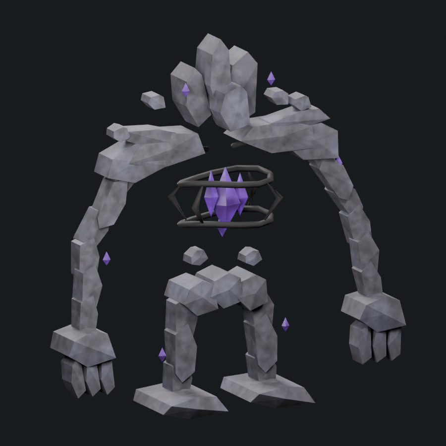
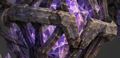
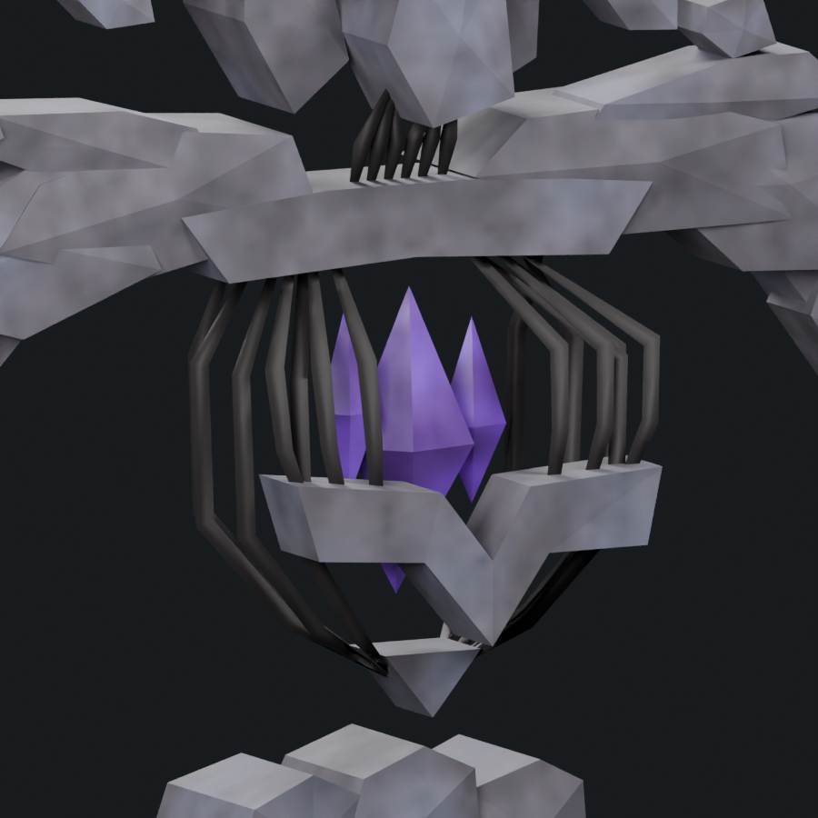

The concept torso has numerous swept metal ribs around the crystal core, a stone band bent into a solid downward V, an upper stone collarbone, and separate metal neck ribs joining that collar to the head. This revision replaces the previous hoops and four-brace basket with those groups. Six front ribs seat into the central band; eight deeper ribs continue below it into the lower cage. Six neck ribs connect the collar and head. Rib sections follow the bends without roll flips, with a rough dark surface.
1,780 triangles · 1.483× native Stone Golem · soft cap 1,800. One mesh/material and four 512px maps. Forty rib roots pass 35 sampled poses across seven retained actions. This remains a candidate for visual review; texture and stone fracture detail still need refinement.





The torso and neck were revised; the r4 limbs, shoulders, crown, rig and actions remain. Stone weathering, individualized fracture detail and the overall silhouette are still unfinished. Native admission and live performance are pending. The rolling tally remains one adequately reworked boss of six.
Editable Blender model · Skinned export · Retained attack pose · Geometry and export checks · Rib contact checks · Torso construction · Source provenance